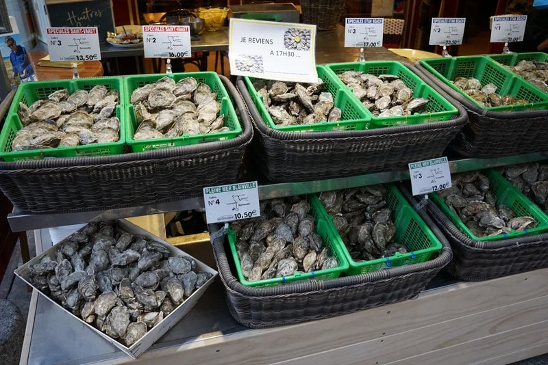
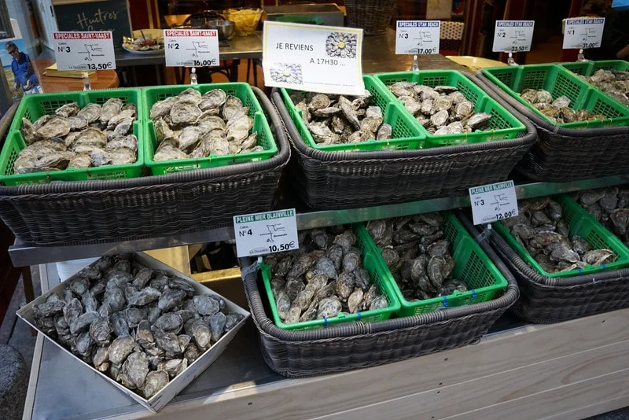
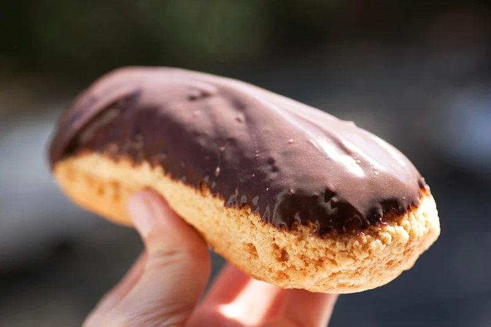
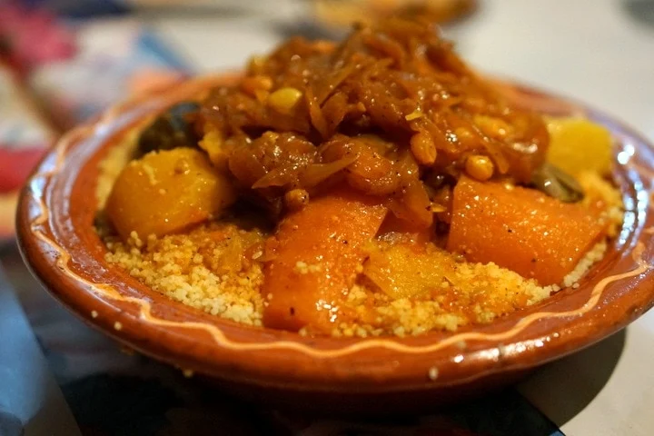
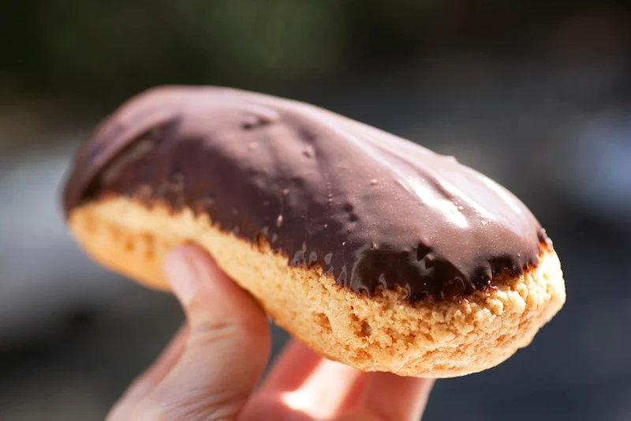
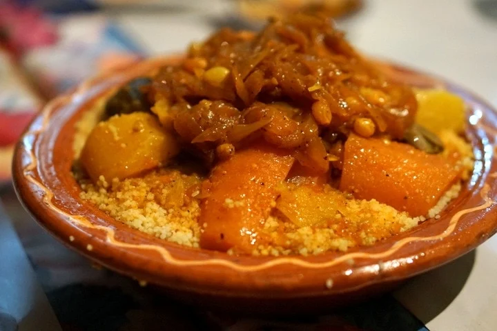

You could climb the Eiffel Tower, stroll down the Champs-Elysées, and spend the rest of your time in the French capital getting lost among paintings in the Louvre. But if you don’t eat out in Paris, you’ll have missed out entirely.
My goal is to connect with the local culture and cuisine, which usually means market visits, food tours, and hidden away restaurants are involved. On my recent foodie trip to Paris, I hit the streets in search of the top 10 must try foods in Paris. Read on for my absolute musts — worth every bite!
>
 

 


